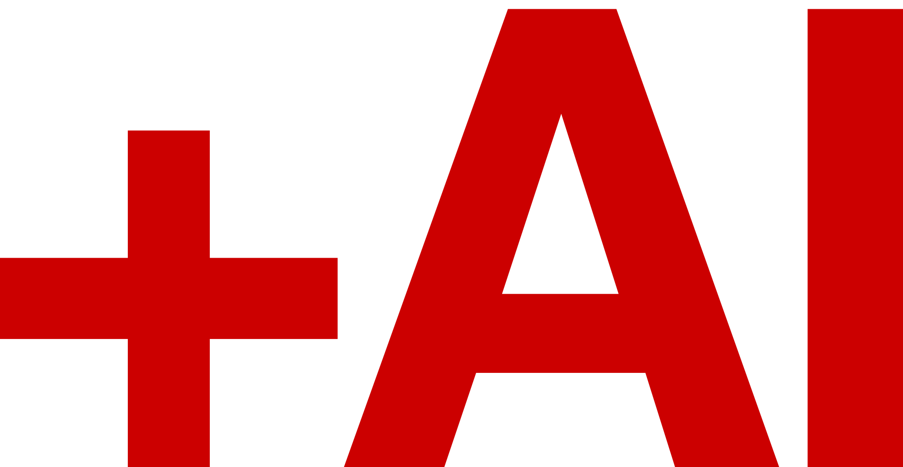

A design system for ideas people can feel, follow, and use.
.
The stance01
01 · Stance
Make room for people.
Visually powerful.Intellectually elegant.Human.
The work should catch the eye, reward a closer look, and help someone see what to do next. The human part is what makes the whole thing useful.
The human picture02
Editorial illustration
Let people carry the meaning.
Warmth comes from a recognizable moment of work: a gesture, a shared focus, a choice made together.
Collaboration. The robot sorts the evidence. People connect it to a decision.
The scene should help us understand the work.
Keep figures expressive, with clear gestures and a shared focus. The warm cream, white oak, and quiet brass of this workspace belong to the same world as the mirror. When AI belongs in the story, its humanoid companion stands about shoulder height. Warm off-white, gentle curves, small warm blue-green teal accents, and an attentive expression make its supporting role clear. Keep this robot’s design consistent across images; adapt the people and setting to the client. The human always leads.
A plant, brass lamp, or a few post-its can make a setting feel lived in. Choose what serves the scene; the whole prop collection never needs to appear at once.
Three registers03
03 · System
Let the idea lead.
Some ideas need a bold line. Others need room to read or a picture to think with. Choose the voice that helps the reader most.
01 / TYPEStatement
Few words stop the reader. Covers, dividers, posters, title slides.
02 / WORDSWorking
A reader can follow an argument. Proposals, reports, web pages, deck interiors.
03 / PICTUREExplaining
A relationship becomes visible. Field guides, diagrams, teaching slides.
Register 01 / Statement04
Type talks
Make a moment.
One claim, generous space, a deliberate stop.
Think in systems.Poster scale is earned. It does not belong on every page.
Register 02 / Working05
Words talk
Make the next step clear.
A reader should feel guided through the work, with enough space to think along the way.
01 / A point
Start with the decision the reader needs to make.
Use a strong heading, readable sentences, and space between steps. Let rules organize the work. Use a table when people need to compare, and a picture when the relationship matters more than the words.
Register 03 / Explaining06
Picture talks
Show the relationship.
A framework gives the idea shape. An editorial image makes it easier to remember.
Reflection can change what we see.
AI can sift through what we have recorded and help us notice a pattern we could not see alone. Here, the robot gathers the evidence; the woman recognizes what it means for her. The human owns the insight and decides what to do with it.
OPEN THE IMAGE TO SEE IT FULL SIZE →
Mirror metaphor. From scattered information to a pattern a person can recognize in herself.
Visual thinking in practice07
Ways to explain
Give people something to point at.
A good visual makes a relationship easier to discuss. Choose its shape from the question the audience needs to answer.
01 / HIERARCHY
What supports what?
VisionWhere we’re going
PurposeWhy it matters
StrategyThe choices we make
GoalsWhat progress looks like
ValuesHow we work together
A pyramid makes the layers visible. Bring the conversation back to the business before choosing what AI should help with.
02 / SEQUENCE
How does the idea travel?
A shared noteOne place both collaborators can read and write.
01Leave a findingA useful observation is written down.
02Read in contextThe next collaborator can understand it.
03Build on itA response becomes part of the shared work.
A sequence shows how one contribution changes the next. Make the shared path visible, along with who can use it.
03 / REFRAMING
Same facts. A different frame.
Hold the situation steady and change the question. A wider view can reveal options that the first frame left outside.
A narrower questionFewer facts enter the discussion.A wider questionMore relationships become available to explore.
The person sets the frame. The robot helps investigate within it. Keep the people, evidence, and viewpoint consistent so the changed frame is what the reader notices.
Grounds08
08 · Color
Three places to stand.
White is for work. Khaki marks a threshold. Black is a statement.
White#FFFFFF / WORK
Khaki paper#ECE3D7 / THRESHOLD
Black#000000 / STATEMENT
Soft paper is an aside in Working pages and may be a page ground in Explaining. Utility grey belongs in tables. Neither becomes a fourth general-purpose ground.
Illustrations have more room. Warm earth tones, navy, muted teal, and other considered accents can help tell the story. Green is not a core brand color or a default dominant color. Keep the overall scene warm and give each added color a purpose.
Red09
09 · Attention
Use red where it helps.
It can orient, make one idea easier to find, or show the next action. Give it a reason to appear.
01 / Orient
Show where we are.
A small number or marker helps the reader find the section.
02 / Point
Make one thing impossible to miss.
The word, number, or changed detail carrying the argument.
Proposed refinement for review: keep most section labels black. Use red for selected numbered cues, one meaningful point, and a key action. A hand-drawn underline can point to a phrase when it serves the idea.
Typography10
10 · Type
Give each voice its job.
Helvetica signals. Century reads. Mono names data. Caveat feels written by hand.
1.50 / STATEMENTLarge contrastType carries the page. Few sizes and a decisive hierarchy.
1.25 / WORKINGReading rhythmReadable body text and a clear path through the argument.
1.333 / EXPLAININGPicture firstLabels and notes support the drawing.
Screen floors: 12px meta, 15px body. Slides: 24px body. The sizes in each register are drawn from a ratio, then checked at the actual viewing size.
The meta row11
11 · Orientation
Tell us where we are.
A small line at the top gives a document its bearings.
DK ConsultingWorking document09
The DK box sits at the left. Labels are Helvetica capitals. Data uses mono. Hairlines create structure without becoming decoration.
The grid12
12 · Layout
Make space do work.
Twelve columns give the page a repeatable skeleton, while the content chooses its shape.
010203040506070809101112
Outer margin: 5% of the short side. Gutter: 2% of width. Rule weights: 0.5, 1, and 2px.
Icons13
13 · Wayfinding
A clear sign, a softer hand.
Simple geometry gives each icon its meaning. Gentle curves keep it at home beside the people and the words.
Move forward
Read a note
Mark time
Look closer
Talk it through
Change the frame
Keep icons geometric and easy to recognize. Rounded line ends echo the curves in the illustrations and controls. Use one quiet stroke, no filled badges, and a word alongside when the meaning could be unclear. Drawn details stay inside the scene.
Handwriting14
14 · Human trace
Write where a person would.
Caveat belongs in a margin, a quote, or a whiteboard inside an image.
A person’s thinking, on the page. Handwritten notes belong where someone would actually make them.
Founder example
Representing Danoosh.
Keep his likeness recognizable: bald head, neatly trimmed salt-and-pepper beard, warm expression, and relaxed, thoughtful manner. Understated knitwear and a simple tee fit this setting.
Show him coaching, listening, or making sense of something with another person. Include him when the founder belongs in the story; adapt the wider cast and setting to the client.
What changed?
The page speaks in Helvetica and Century. A small note in Caveat lets us see the person thinking.
Illustration15
15 · Image making
Brief the picture with purpose.
Begin with what the image should help someone understand. Then choose the metaphor, actors, palette, and space for type.
Personal insightShared decisionsA new perspective
One visual family, different situations. Preserve the drawing style, warm materials, and robot identity. Adapt the people, setting, and story to the client.
01 / FRAMING
Name the relationship.
One framework and one metaphor give the image a reason to exist.
02 / FORM
Keep shapes smooth.
Flat matte color, economical contours, expressive but stylized people.
03 / REVIEW
Check what the eye follows.
Look at the image at its real size. The main relationship should read before its details do.
Marks16
16 · Identity
Know which mark speaks.
Use the DK box for DK pages. The +AI mark takes its place on community pages.
DK Consulting
Top left, at two meta-row line heights. The wordmark appears once in a document.
+AI community

Helvetica Bold in statement red. Use it on community surfaces, without the DK box.
How rules work17
The operating rule
Know what can bend.
A useful system tells its makers where judgment belongs.
01 / MUST
Guardrails
Font roles, grounds, red, logo positions, readability floors, and the things that visibly break the brand.
02 / USUAL
Defaults
Registers, ratios, grid, meta row, icons and spacing. Depart with a clear reason.
03 / CHOOSE
License
Composition, scale within range, metaphor, crop and the one red point need a designer’s judgment.